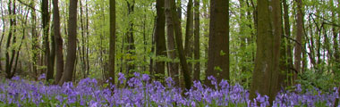
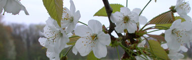
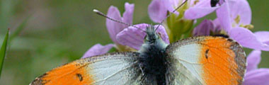

Lente...
maandag 19 april 2004 | Natuur
Heerlijk toch? Wie zich dit jaar nog wil vergapen aan de diepblauwe bloemenmist op de bodem van onze Vlaamse bossen — gevormd door duizenden geurende hyacinten — moet zich haasten, of gewoon even doorklikken hieronder…


